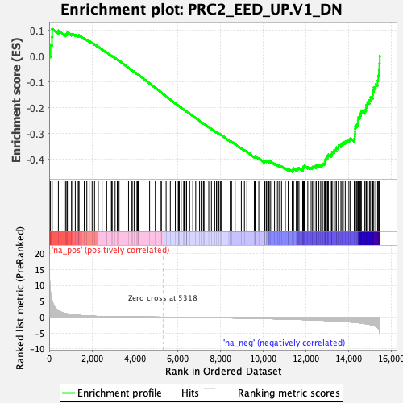
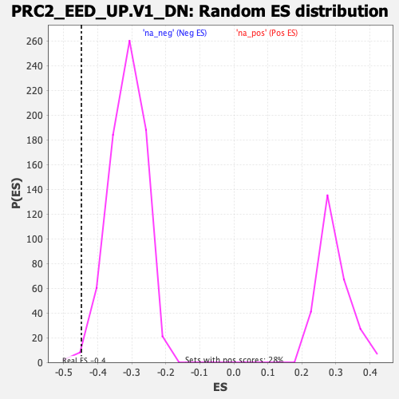

| | | Dataset | DE_genes |
| Phenotype | NoPhenotypeAvailable |
| Upregulated in class | na_neg |
| GeneSet | PRC2_EED_UP.V1_DN |
| Enrichment Score (ES) | -0.44817442 |
| Normalized Enrichment Score (NES) | -1.428276 |
| Nominal p-value | 0.008298756 |
| FDR q-value | 0.13806842 |
| FWER p-Value | 0.782 |
Table: GSEA Results Summary

Fig 1: Enrichment plot: PRC2_EED_UP.V1_DN
Profile of the Running ES Score & Positions of GeneSet Members on the Rank Ordered List
| PROBE | GENE SYMBOL | GENE_TITLE | RANK IN GENE LIST | RANK METRIC SCORE | RUNNING ES | CORE ENRICHMENT | | 1 | SYN1 | | | 60 | 7.950 | 0.0456 | No |
| 2 | ARRB2 | | | 133 | 5.311 | 0.0741 | No |
| 3 | PTK2B | | | 140 | 5.170 | 0.1059 | No |
| 4 | DBF4B | | | 430 | 2.007 | 0.0995 | No |
| 5 | HELLS | | | 766 | 1.163 | 0.0849 | No |
| 6 | SLC2A6 | | | 827 | 1.078 | 0.0877 | No |
| 7 | PDCD1LG2 | | | 853 | 1.026 | 0.0924 | No |
| 8 | FRS2 | | | 1043 | 0.806 | 0.0851 | No |
| 9 | FOSL2 | | | 1098 | 0.755 | 0.0863 | No |
| 10 | TNS4 | | | 1221 | 0.662 | 0.0824 | No |
| 11 | RECQL4 | | | 1319 | 0.604 | 0.0799 | No |
| 12 | PACS1 | | | 1385 | 0.571 | 0.0792 | No |
| 13 | FASN | | | 1394 | 0.568 | 0.0822 | No |
| 14 | PTGER2 | | | 1640 | 0.456 | 0.0690 | No |
| 15 | ZDHHC6 | | | 1761 | 0.403 | 0.0637 | No |
| 16 | APLP1 | | | 1871 | 0.363 | 0.0588 | No |
| 17 | HIVEP3 | | | 2008 | 0.324 | 0.0520 | No |
| 18 | KIF23 | | | 2122 | 0.291 | 0.0464 | No |
| 19 | CHAF1B | | | 2296 | 0.244 | 0.0366 | No |
| 20 | HIC1 | | | 2473 | 0.214 | 0.0264 | No |
| 21 | SV2A | | | 2676 | 0.180 | 0.0144 | No |
| 22 | SCD | | | 2684 | 0.178 | 0.0150 | No |
| 23 | ODF2 | | | 2855 | 0.155 | 0.0049 | No |
| 24 | PCDHGC3 | | | 2918 | 0.147 | 0.0017 | No |
| 25 | ZWILCH | | | 2947 | 0.145 | 0.0008 | No |
| 26 | SP1 | | | 3083 | 0.133 | -0.0072 | No |
| 27 | PDE4D | | | 3185 | 0.124 | -0.0130 | No |
| 28 | PNPLA3 | | | 3221 | 0.120 | -0.0145 | No |
| 29 | TMEM59L | | | 3268 | 0.116 | -0.0168 | No |
| 30 | BUB1B | | | 3711 | 0.087 | -0.0452 | No |
| 31 | AFF3 | | | 3852 | 0.078 | -0.0538 | No |
| 32 | PCDHGA3 | | | 3885 | 0.077 | -0.0555 | No |
| 33 | CDCA8 | | | 3972 | 0.072 | -0.0606 | No |
| 34 | PC | | | 4008 | 0.069 | -0.0625 | No |
| 35 | LIN7A | | | 4105 | 0.064 | -0.0684 | No |
| 36 | SLC26A1 | | | 4131 | 0.062 | -0.0696 | No |
| 37 | FBXO17 | | | 4150 | 0.061 | -0.0704 | No |
| 38 | UTRN | | | 4163 | 0.061 | -0.0708 | No |
| 39 | SURF2 | | | 4696 | 0.032 | -0.1054 | No |
| 40 | GNAI2 | | | 4963 | 0.018 | -0.1227 | No |
| 41 | ORC1 | | | 5240 | 0.004 | -0.1407 | No |
| 42 | MCM10 | | | 5241 | 0.004 | -0.1406 | No |
| 43 | ABCB9 | | | 5469 | -0.008 | -0.1554 | No |
| 44 | CORO1A | | | 5665 | -0.019 | -0.1681 | No |
| 45 | ASF1B | | | 5900 | -0.032 | -0.1832 | No |
| 46 | RAD54L2 | | | 6037 | -0.042 | -0.1918 | No |
| 47 | ERCC2 | | | 6046 | -0.042 | -0.1920 | No |
| 48 | CDC45 | | | 6085 | -0.044 | -0.1943 | No |
| 49 | MYBL2 | | | 6173 | -0.051 | -0.1996 | No |
| 50 | GLI1 | | | 6291 | -0.058 | -0.2069 | No |
| 51 | RNF19A | | | 6312 | -0.060 | -0.2078 | No |
| 52 | BTBD2 | | | 6343 | -0.062 | -0.2094 | No |
| 53 | MCM5 | | | 6419 | -0.067 | -0.2139 | No |
| 54 | STXBP2 | | | 6423 | -0.067 | -0.2137 | No |
| 55 | RAD54L | | | 6424 | -0.067 | -0.2133 | No |
| 56 | TRIM46 | | | 6568 | -0.077 | -0.2221 | No |
| 57 | CLSPN | | | 6716 | -0.089 | -0.2312 | No |
| 58 | CHM | | | 6853 | -0.099 | -0.2394 | No |
| 59 | TACC3 | | | 7032 | -0.113 | -0.2504 | No |
| 60 | JUP | | | 7146 | -0.122 | -0.2570 | No |
| 61 | DCSTAMP | | | 7214 | -0.128 | -0.2606 | No |
| 62 | TNK2 | | | 7243 | -0.131 | -0.2616 | No |
| 63 | CA9 | | | 7463 | -0.149 | -0.2750 | No |
| 64 | TCIRG1 | | | 7587 | -0.160 | -0.2820 | No |
| 65 | FADS2 | | | 7741 | -0.174 | -0.2909 | No |
| 66 | INHBB | | | 7820 | -0.181 | -0.2949 | No |
| 67 | CHST3 | | | 7882 | -0.187 | -0.2977 | No |
| 68 | THRAP3 | | | 7936 | -0.192 | -0.3000 | No |
| 69 | WIZ | | | 8003 | -0.199 | -0.3031 | No |
| 70 | C1orf112 | | | 8040 | -0.203 | -0.3042 | No |
| 71 | PLK1 | | | 8471 | -0.248 | -0.3307 | No |
| 72 | INCENP | | | 8482 | -0.249 | -0.3298 | No |
| 73 | OSGEPL1 | | | 8529 | -0.254 | -0.3312 | No |
| 74 | SIPA1 | | | 8695 | -0.273 | -0.3403 | No |
| 75 | EHMT2 | | | 8986 | -0.308 | -0.3573 | No |
| 76 | PLXNB3 | | | 9130 | -0.326 | -0.3647 | No |
| 77 | TCAP | | | 9246 | -0.341 | -0.3700 | No |
| 78 | SLC9A3R2 | | | 9591 | -0.386 | -0.3901 | No |
| 79 | TRMT2A | | | 9623 | -0.392 | -0.3897 | No |
| 80 | LIPE | | | 9627 | -0.393 | -0.3875 | No |
| 81 | EXOSC2 | | | 9801 | -0.418 | -0.3962 | No |
| 82 | FKBP5 | | | 10065 | -0.456 | -0.4105 | No |
| 83 | CSDC2 | | | 10073 | -0.457 | -0.4081 | No |
| 84 | AP1G2 | | | 10088 | -0.459 | -0.4062 | No |
| 85 | DCLRE1B | | | 10152 | -0.470 | -0.4074 | No |
| 86 | GALK1 | | | 10174 | -0.474 | -0.4058 | No |
| 87 | TUT1 | | | 10274 | -0.487 | -0.4092 | No |
| 88 | GLE1 | | | 10290 | -0.490 | -0.4071 | No |
| 89 | MRAS | | | 10358 | -0.499 | -0.4084 | No |
| 90 | TNIP1 | | | 10538 | -0.525 | -0.4168 | No |
| 91 | ARHGAP19 | | | 10674 | -0.550 | -0.4222 | No |
| 92 | HP1BP3 | | | 10749 | -0.560 | -0.4236 | No |
| 93 | TAF1C | | | 10866 | -0.577 | -0.4275 | No |
| 94 | VAC14 | | | 11043 | -0.605 | -0.4353 | No |
| 95 | PRICKLE3 | | | 11180 | -0.632 | -0.4402 | No |
| 96 | GPR176 | | | 11188 | -0.633 | -0.4367 | No |
| 97 | MCM2 | | | 11364 | -0.670 | -0.4440 | Yes |
| 98 | TOP3B | | | 11396 | -0.677 | -0.4418 | Yes |
| 99 | CLPB | | | 11414 | -0.682 | -0.4387 | Yes |
| 100 | ZNF446 | | | 11422 | -0.683 | -0.4349 | Yes |
| 101 | TBL3 | | | 11557 | -0.710 | -0.4392 | Yes |
| 102 | BBC3 | | | 11605 | -0.721 | -0.4378 | Yes |
| 103 | MVD | | | 11636 | -0.730 | -0.4352 | Yes |
| 104 | FER | | | 11682 | -0.739 | -0.4335 | Yes |
| 105 | ABCB8 | | | 11853 | -0.773 | -0.4398 | Yes |
| 106 | CXCL12 | | | 11856 | -0.773 | -0.4351 | Yes |
| 107 | SLC12A4 | | | 11878 | -0.779 | -0.4316 | Yes |
| 108 | ALG12 | | | 11892 | -0.782 | -0.4276 | Yes |
| 109 | BTBD7 | | | 11929 | -0.791 | -0.4250 | Yes |
| 110 | CAD | | | 12093 | -0.828 | -0.4305 | Yes |
| 111 | RIPK1 | | | 12211 | -0.857 | -0.4328 | Yes |
| 112 | ATP13A2 | | | 12288 | -0.875 | -0.4323 | Yes |
| 113 | XRCC3 | | | 12322 | -0.883 | -0.4290 | Yes |
| 114 | INSIG1 | | | 12387 | -0.899 | -0.4275 | Yes |
| 115 | LRRC20 | | | 12482 | -0.924 | -0.4279 | Yes |
| 116 | AMDHD2 | | | 12489 | -0.925 | -0.4226 | Yes |
| 117 | FZD8 | | | 12610 | -0.955 | -0.4244 | Yes |
| 118 | BCKDK | | | 12696 | -0.981 | -0.4239 | Yes |
| 119 | PRMT7 | | | 12749 | -0.996 | -0.4211 | Yes |
| 120 | WFDC1 | | | 12783 | -1.005 | -0.4170 | Yes |
| 121 | PHKG2 | | | 12864 | -1.033 | -0.4157 | Yes |
| 122 | POLA2 | | | 12896 | -1.044 | -0.4113 | Yes |
| 123 | LMOD1 | | | 12911 | -1.049 | -0.4056 | Yes |
| 124 | MCOLN1 | | | 12922 | -1.053 | -0.3997 | Yes |
| 125 | NDRG4 | | | 12957 | -1.062 | -0.3953 | Yes |
| 126 | HS6ST1 | | | 13011 | -1.080 | -0.3921 | Yes |
| 127 | POLD1 | | | 13018 | -1.082 | -0.3857 | Yes |
| 128 | GSDMD | | | 13056 | -1.093 | -0.3813 | Yes |
| 129 | FBXL6 | | | 13194 | -1.135 | -0.3832 | Yes |
| 130 | TRPM4 | | | 13221 | -1.146 | -0.3777 | Yes |
| 131 | SLC35C2 | | | 13226 | -1.147 | -0.3709 | Yes |
| 132 | MAPK7 | | | 13317 | -1.180 | -0.3694 | Yes |
| 133 | VAV2 | | | 13337 | -1.187 | -0.3632 | Yes |
| 134 | ACAA2 | | | 13423 | -1.221 | -0.3612 | Yes |
| 135 | DDX31 | | | 13428 | -1.222 | -0.3538 | Yes |
| 136 | CDK18 | | | 13526 | -1.264 | -0.3523 | Yes |
| 137 | TNFRSF10D | | | 13537 | -1.268 | -0.3450 | Yes |
| 138 | ARHGEF17 | | | 13643 | -1.309 | -0.3437 | Yes |
| 139 | PEAK1 | | | 13687 | -1.323 | -0.3383 | Yes |
| 140 | SYMPK | | | 13752 | -1.361 | -0.3340 | Yes |
| 141 | PFKFB4 | | | 13845 | -1.398 | -0.3313 | Yes |
| 142 | TSC2 | | | 13928 | -1.436 | -0.3277 | Yes |
| 143 | MFHAS1 | | | 14016 | -1.477 | -0.3241 | Yes |
| 144 | NYNRIN | | | 14084 | -1.524 | -0.3190 | Yes |
| 145 | PAGR1 | | | 14266 | -1.644 | -0.3206 | Yes |
| 146 | EED | | | 14294 | -1.657 | -0.3120 | Yes |
| 147 | QTRT1 | | | 14297 | -1.659 | -0.3018 | Yes |
| 148 | USP20 | | | 14306 | -1.664 | -0.2920 | Yes |
| 149 | PACSIN3 | | | 14311 | -1.666 | -0.2818 | Yes |
| 150 | IDH2 | | | 14317 | -1.670 | -0.2718 | Yes |
| 151 | PWP2 | | | 14384 | -1.706 | -0.2654 | Yes |
| 152 | MICALL2 | | | 14431 | -1.738 | -0.2576 | Yes |
| 153 | LSS | | | 14442 | -1.747 | -0.2474 | Yes |
| 154 | NUP188 | | | 14456 | -1.759 | -0.2372 | Yes |
| 155 | SEMA3B | | | 14527 | -1.808 | -0.2305 | Yes |
| 156 | CASKIN2 | | | 14564 | -1.842 | -0.2214 | Yes |
| 157 | DUSP7 | | | 14598 | -1.870 | -0.2119 | Yes |
| 158 | PLXNB1 | | | 14760 | -2.026 | -0.2098 | Yes |
| 159 | TGFBR1 | | | 14816 | -2.076 | -0.2004 | Yes |
| 160 | DNAJB2 | | | 14834 | -2.093 | -0.1885 | Yes |
| 161 | TUBGCP2 | | | 14888 | -2.145 | -0.1786 | Yes |
| 162 | ANKZF1 | | | 14977 | -2.277 | -0.1702 | Yes |
| 163 | RAPGEF1 | | | 15030 | -2.342 | -0.1589 | Yes |
| 164 | PCDH12 | | | 15130 | -2.506 | -0.1498 | Yes |
| 165 | HMOX1 | | | 15137 | -2.517 | -0.1345 | Yes |
| 166 | CSPG4 | | | 15181 | -2.604 | -0.1211 | Yes |
| 167 | MICAL1 | | | 15270 | -2.850 | -0.1090 | Yes |
| 168 | RANGAP1 | | | 15356 | -3.203 | -0.0946 | Yes |
| 169 | ENO2 | | | 15390 | -3.458 | -0.0752 | Yes |
| 170 | ITPKB | | | 15421 | -3.840 | -0.0532 | Yes |
| 171 | MAP3K6 | | | 15441 | -4.101 | -0.0289 | Yes |
| 172 | RASSF1 | | | 15460 | -4.941 | 0.0007 | Yes |
Table: GSEA details [plain text format]

Fig 2: PRC2_EED_UP.V1_DN: Random ES distribution
Gene set null distribution of ES for PRC2_EED_UP.V1_DN